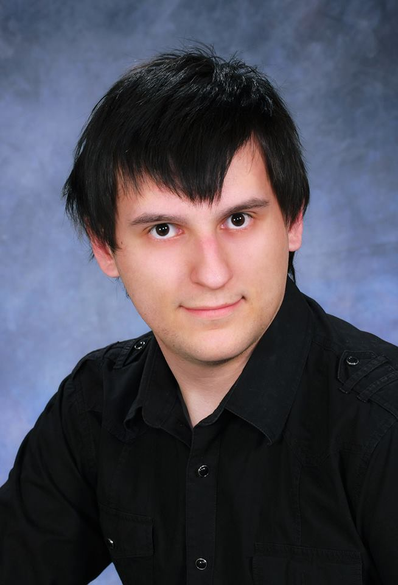

Bemutatkozás


A nevem Salamon Andor. 1995. augusztus 25.-én születtem Szabadkán. Életem jelentős részét Csantavéren éltem le és jelenleg is ott tartózkodom.
Óvodába (2 év) és általános iskolába (8 év) Csantavéren jártam és bár rövid ideig, de nagyon hatásos volt rám az informatika világa, minden ami az IT-re vonatkozik.
Általános iskola után kikerültem Szabadkára, ahova középiskolába (4 év) jártam és az furcsa dolog történt meg velem, hogy gépészetet kezdtem tanulni, annak ellenére, hogy soha nem foglalkoztatot engemet. Viszont mégis kituttam járni azt is.
Aztán jött az érettségi, ami számomra elég jól sikerült. Még érettségi előtt megfogadtam magamnak, hogy a főiskolára (ami szintén Szabadkán volt) az informatikai szakot fogom választani és azt gondolom hogy be is jött ez a lépés.
Rögtön érettségi után jelentkeztem a főiskolára és onnantól kezdve már csakis az informatikával foglalkoztam. 3 év főiskola után jött a diplomavédés, amelyet az elektronikus ügyvitel tantárgyból raktam le és a témája "Multiplatform és multifunkcionális weboldal készítése és fejlesztése."
Jelenleg munkakereső hírében állok és ezért van az, hogy ezen a weboldalon mellékelek egy online CV-t, amely akár segítséget tud nyújtani a munkaadóknak ha erre kerül a sor. Egy dolgot biztos mondthatok: soha sem a pénz vezérel engem ahhoz, hogy munkát találjak magamnak.
Végszóként pár tulajdonság magamról: kedves, egy kicsit szerény és mindenkivel jól kitudok jönni azt gondolom akár munkával, akár magánügyileg kapcsolatosan.